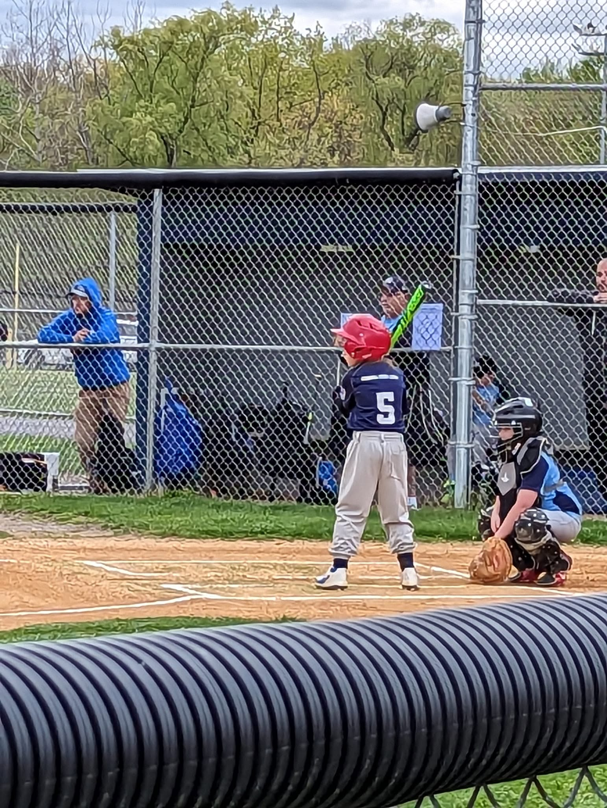

FUN-damentals
A parent-and-player introduction to throwing, catching, hitting and running the bases.
Register
March 7, 2027, at Brinckerhoff Elementary School.
April 3, 2027. Rain date April 10.
One refundable $50 fee per family, returned after a family member volunteers during the season.
Division ages guide initial placement. The league may adjust placement after evaluations. Check the registration portal for availability and final details.
Baseball divisions · Softball divisions · Little League age charts
Use your player’s age on August 31, 2027 to compare baseball divisions.
FUN-damentals is listed under Baseball and introduces skills for both sports. Players must be 4 by the start of the season.
A parent-and-player introduction to throwing, catching, hitting and running the bases.
RegisterLearn the basics by hitting from a tee. Monday practice and Saturday games.
RegisterLearn the basics by hitting from a tee. Tuesday practice and Saturday games at 10 a.m.
RegisterHit pitches from a coach while learning field positions and game basics.
RegisterMake the transition to player pitching with an emphasis on instruction and skill development.
RegisterBuild pitching, hitting and defensive skills in player-pitch games.
RegisterDevelop game strategy and teamwork in the Little League Major division.
RegisterTransition to a larger diamond with a 50-foot pitching distance and 70-foot basepaths.
RegisterPlay full-diamond baseball with 90-foot basepaths.
RegisterContinue competitive full-diamond baseball for older players.
RegisterUse your player’s age on December 31, 2026 to compare softball divisions.
Learn to hit coach-delivered pitches, run the bases and field as a team.
RegisterBuild confidence in player-pitch games and develop pitching, hitting and defensive skills.
RegisterBuild on fastpitch fundamentals with more game strategy and team play.
RegisterKeep developing fastpitch skills and game strategy in the Junior division.
RegisterContinue competitive fastpitch softball in the league’s oldest division.
Register